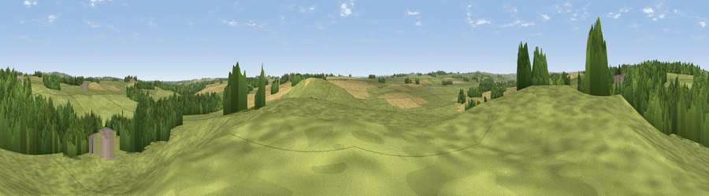

Viewpoint near Bolam
#39551 in England · top 93% of its area beats it · near BolamThe view, rendered

A 360° render of this exact spot computed from the terrain model, tree cover and land cover — summer colours, afternoon light, calibrated against photographs of famous viewpoints. Real trees, hedges and buildings will differ in detail.
The panorama
Grey silhouette: terrain skyline in each direction (720 bearings, Earth curvature and refraction included). Dashed green: skyline with trees (+15 m) and buildings (+8 m) as obstacles. Blue strip: how far the ground is visible on each bearing.
Where the view opens
Wedge length = distance to the farthest visible ground on that bearing (vegetation-aware). Rings at 10, 25 and 50 km.
What fills the view
65% grassland · 24% woodland · 10% cropland · 1% built-up
Angular shares of the visible panorama (visual magnitude), not map area. Landscape diversity 0.39 (0–1 Shannon).
Key numbers
More beautiful places nearby
The staircase of upgrades: each row has a higher view potential than everything closer. Driving times are estimates from straight-line distance, calibrated against real road routing — check an actual route before setting out.
| Place | Direction | Drive | Score |
|---|---|---|---|
| Viewpoint near Bolam | SSE · 1 km | ~2 min | 40.0 |
| Viewpoint near Longhorsley | NNE · 5 km | ~12 min | 41.3 |
| Viewpoint near Longhorsley | NNE · 6 km | ~12 min | 57.3 |
| Viewpoint near Nunnykirk | NW · 6 km | ~13 min | 61.0 |
| Shaftoe Crags | WSW · 7 km | ~14 min | 68.7 |
| Viewpoint near Rothbury | NNW · 15 km | ~26 min | 70.3 |
| Garleigh Hill | NNW · 15 km | ~27 min | 73.4 |
| Viewpoint near Rothbury | NNW · 15 km | ~27 min | 81.1 |
55.15943, -1.82537 · source: screening · position refined by local search. Computed location — check access rights before visiting.